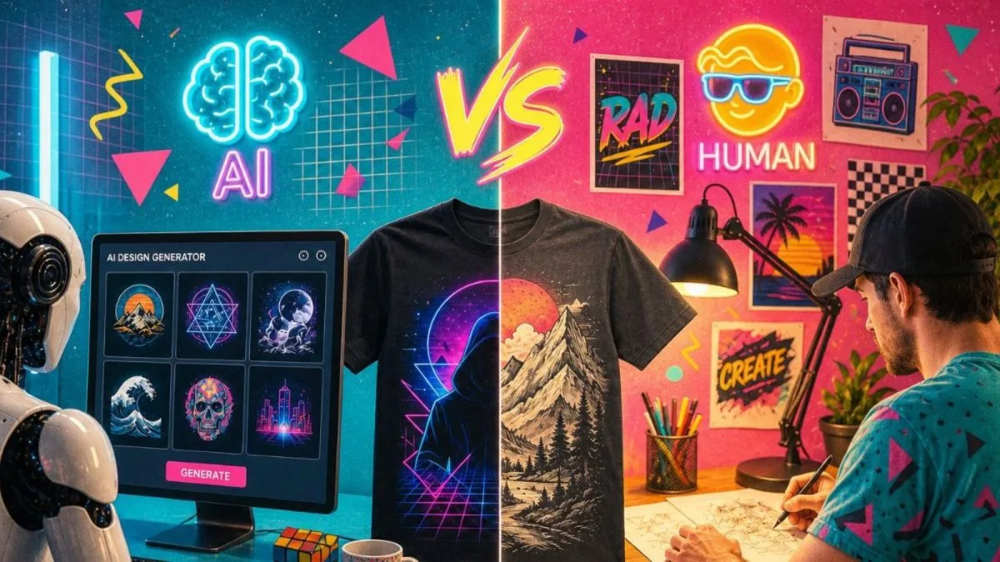

Graphic DesignAI-Assisted Design Is Becoming Standard. What Still Makes a Designer Valuable?
AI is changing how designs are created. The more interesting question is what becomes more valuable when production gets faster.
Read Article →